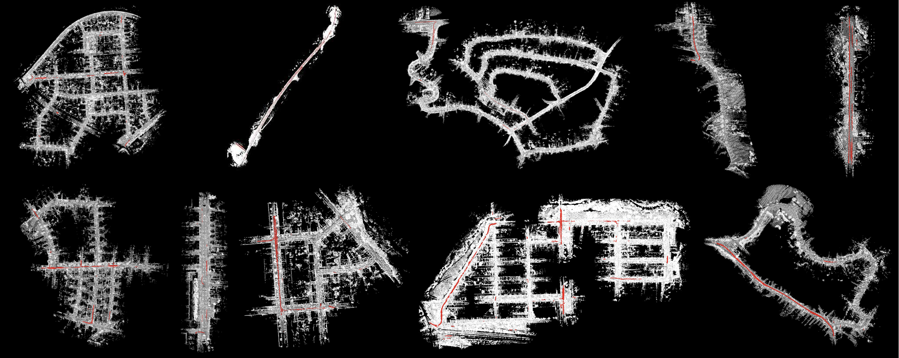
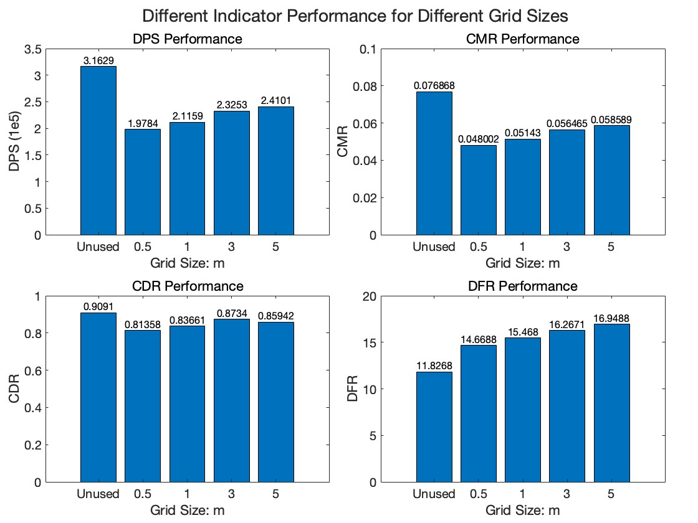

在原有前端的基于Removert的基础上增加评估模块，用来定量评估动态点剔除的效果。
1 Introduction
目前为止，关于动态点剔除的各种论文里的各种方法中，并没有一个很好的对动态点剔除效果进行评估的指标，通常会采用mIoU进行衡量，但是其本质是衡量目标检测时估计的Bounding Box和真实Bounding Box之间的差异，对于真实世界的环境下，动态点不可能都是以某种确定的Object进行存在（例如：静止的人挥舞着自己的手臂，此时只有手臂的点云是动态点云，而Bounding Box标注的是这个人的边框信息），因此，采用mIoU作为标准衡量动态点剔除的效果是不够宽泛的，我们需要将衡量指标的尺度落在具体的某一个点上，而非某个移动的物体上。

图 1 SemanticKitti Dataset (Sequence 00-09, Red represents dynamic point, White represents static point)
我们进行动态点剔除，采用的数据集是具有语义信息标注的SemanticKitti数据集。利用这个数据集进行动态点云剔除的优势在于该数据集对每个点标注了语义信息，并将其存放在了对应的labels文件夹下（每帧点云的标签文件为类似于000000.label的二进制文件）。进一步的，SemanticKitti数据集提供了9类动态点云的标签，分别对应label的数值为{251, 252, 253, 254, 255, 256, 257, 258, 259}，因此，我们可以根据这个label进行点云的动/静态真实分类，从而在动态点云剔除结果生成之后，与真实值进行对比，得到具体的动点剔除的准确性。
2 Read Label Info
为了进行动点剔除效果的评估，首先第一步应该在最初的原始bin数据读取时，将点云的label信息同时进行读取。因此分为两步：
- 创建一个函数readLabel用于读取点云的label信息；
- 将readLabel函数与readBin函数放在一起。
注：之所以要一起读取的原因是：在点云的XYZI数据读取后，会将其进行下采样等预处理操作，这将改变原始点云的顺序，而label文件里的数据顺序是严格按照bin文件的数据顺序的，因此我们需要在readBin的同时readLabel。
2.1 readLabel Creation
由于在代码Removert.cpp的readValidScans函数中，只用了readBin函数读取了存储每帧点云的XYZI数据的二进制bin文件，因此我们需要额外的增加一个readLabel函数对存储每帧点云的语义数据的二进制label文件进行label信息的读取，我们将其添加在utility.cpp中：
// 定义了一个名为readLabel的函数，它接受一个字符串（标签文件的路径）和一个指向pcl::PointCloud<PointType>的智能指针作为参数。
void readLabel(std::string _label_path, pcl::PointCloud<PointType>::Ptr _pcd_ptr)
{
// ##################### load label ########################
// 用std库的fstream打开一个文件流input，以二进制读取模式打开路径为_label_path的文件。
std::fstream input(_label_path.c_str(), ios::in | ios::binary);
// 定义了一个uint32_t类型的向量label，用于存储从文件中读取的标签数据。
std::vector<uint32_t> label;
// 检查文件是否成功打开，如果没有，则输出错误信息并退出程序。
if(!input.good()){
cerr << "Could not read file: " << _label_path << endl;
exit(EXIT_FAILURE);
}
// 将文件读取指针移动到文件的开头位置
input.seekg(0, ios::beg);
// 这个循环读取文件中的每个uint32_t数据，直到文件结束，并将这些数据存储到label向量中。
for (int i = 0; input.good() && !input.eof(); i++)
{
uint32_t data;
input.read(reinterpret_cast<char *>(&data), sizeof(data));
label.push_back(data);
}
// 定义了两个uint16_t类型的向量，分别用于存储实例标签和语义标签。
std::vector<uint16_t> instance;
std::vector<uint16_t> semantic_label;
// 遍历label向量，将每个uint32_t值分割为两个uint16_t值：一个是实例标签，另一个是语义标签，并将它们分别存储到instance和semantic_label向量中。
for (int i = 0; i < label.size(); ++i)
{
// 低16位代表类别，用label与0xFFFF进行与操作，得到低16位
uint16_t slabel = label[i] & 0xFFFF;
// 高16位代表编码id，用右移运算符获取高16位。
uint16_t inst = label[i] >> 16;
instance.push_back(inst);
semantic_label.push_back(slabel);
// 循环遍历DYNAMIC_CLASSES（一个包含动态类别标签的向量），如果当前的语义标签是动态对象的一部分，则将对应点云中的点的强度设置为1
for (int class_num : DYNAMIC_CLASSES)
{
if (slabel == class_num)
{ // check it is in the moving object classes
_pcd_ptr->points[i].intensity = 1;
}
}
}
}
需要注意的是，SemanticKitti数据集的label文件中（以000000.label为例），每一个数据代表一个点的语义信息，类型是uint32_t，其中低 16 位对应于类别。高 16 位对实例 id 进行编码，该实例 id 在整个序列上是时间一致的，即，两次不同扫描中的同一对象获得相同的 id。然而我们只需要其类别，所以需要将其低16位提取出来，用于后续处理。
在得到低16位的类别后，将其与DYNAMIC_CLASS中的类别进行比较，如果在其中，则将该点的intensity标志位记为1（默认为0）。
对000000.labei进行readLabel处理，输出相隔为1000的10个标签，示例如下：
Point 0: Label = 70
Point 1000: Label = 70
Point 2000: Label = 70
Point 3000: Label = 70
Point 4000: Label = 71
Point 5000: Label = 70
Point 6000: Label = 70
Point 7000: Label = 70
Point 8000: Label = 70
Point 9000: Label = 40
2.2 readLabel Insertation
在有了readLabel函数后，我们需要将其正确的放入Removert的流程中，以便给正确顺序的点云赋以label值。观察到readBin函数是在readValidScans函数中，形式如下：
for(auto& _scan_path : sequence_valid_scan_paths_)
{
// read bin files and save
pcl::PointCloud<PointType>::Ptr points (new pcl::PointCloud<PointType>);
if( isScanFileKITTIFormat_ /*true*/) {
// 获取每一帧的点云数据（x,y,z,intensity）
readBin(_scan_path, points); // For KITTI (.bin)
} else {
pcl::io::loadPCDFile<PointType> (_scan_path, *points); // saved from SC-LIO-SAM's pcd binary (.pcd)
}
···
}
PointType是我们自己定义的点云格式，通过给原始的pcl::PointXYZI进行多个标志位的扩充得到，其定义的结构体在utility.h中，如下所示：
// 构建新的结构体，包括点云的三维坐标和六个标志位
struct PointXYZIWithFlag : public pcl::PointXYZI
{
int global_id; // 管理removert环节，默认是0
int grid_id; // 标志自己在地面点筛选时所在的grid的id。默认是0
uint8_t is_dynamic; // 标志是否被算法识别为动态点/静态点。0默认为静态点
uint8_t is_ignored; // 标志是否不参与revert环节。0默认为参与revert环节
uint8_t is_ground; // 标志是否是地面点/非地面点/无效点。0默认为非地面点，1代表地面点，2代表无效点
EIGEN_MAKE_ALIGNED_OPERATOR_NEW
} EIGEN_ALIGN16;
POINT_CLOUD_REGISTER_POINT_STRUCT
(PointXYZIWithFlag,
(float, x, x)
(float, y, y)
(float, z, z)
(float, intensity, intensity) // 标志该点的动态标签真实值。默认为0，代表是静态点。
(int, global_id, global_id)
(int, grid_id, grid_id)
(uint8_t, is_dynamic, is_dynamic)
(uint8_t, is_ignored, is_ignored)
(uint8_t, is_ground, is_ground)
)
using PointType = PointXYZIWithFlag;
这里选择用intensity来存储点云的真实标签值而不用诸如is_dynamic的自定义标志位来获得点云的真实标签值的原因后面会提到。
我们可以看到，原始的代码里，是对有效的bin文件的vector（即sequence_valid_scan_paths_）进行遍历，直接对其中的每个具体的bin文件（即_scan_path）进行数据XYZI的读取，并存放到pcl::PointCloud<PointType>::Ptr类型的points中。因此若想要将readLabel函数加到readBin函数后面，需要对for循环的条件进行修改（因为_scan_path是*.bin文件的路径，而非*.label文件的路径），因此我们需要找到sequence_valid_scan_paths_是如何构建的。观察其在Removert.cpp中的parseValidScanInfo函数中，主要实现在如下一行代码：
sequence_valid_scan_paths_.emplace_back(sequence_scan_paths_.at(curr_idx));
这里curr_idx是经过筛选后的有效的*.bin文件索引，因此我们思考：可以将curr_idx的个数保存下来到valid_scan_cnt中，用遍历该参数来代替原始的for循环内的条件。
接下来要顺藤摸瓜，理清*.bin文件是如何经过Removert被读取的，对sequence_scan_paths_进行搜索，发现其在RosParamServer.cpp中的RosParamServer构造函数中，代码如下：
// parsing bin file paths
nh.param<std::string>("removert/sequence_scan_dir", sequence_scan_dir_, "/use/your/directory/having/*.bin");
for(auto& _entry : fs::directory_iterator(sequence_scan_dir_)) {
sequence_scan_names_.emplace_back(_entry.path().filename());
sequence_scan_paths_.emplace_back(_entry.path());
}
std::sort(sequence_scan_names_.begin(), sequence_scan_names_.end());
std::sort(sequence_scan_paths_.begin(), sequence_scan_paths_.end());
num_total_scans_of_sequence_ = sequence_scan_paths_.size();
ROS_INFO_STREAM("\033[1;32m Total : " << num_total_scans_of_sequence_ << " scans in the directory.\033[0m");
可以看到，首先通过ros的节点句柄NodeHandle获得config文件中的params_kitti.yaml的参数sequence_scan_dir，该参数是存放有*.bin文件的位置（这里为"/home/ubuntu/yn/SLAM/Dynamic_Object_Removing/SemanticKitti/09-odometry/velodyne/"），并将其传入到参数sequence_scan_dir_中；接着通过std::filesystem::directory_iterator对该路径下的*.bin文件路径进行迭代，将其路径逐个存放到sequence_scan_paths_
中，并进行一些后处理操作。
了解到此，我们就可以同样的将*.label信息读取到points中。首先在config文件中的params_kitti.yaml的参数里添加存放*.label的路径sequence_scan_label_dir，添加后params_kitti.yaml的部分信息如下：
sequence_scan_dir: "/home/ubuntu/yn/SLAM/Dynamic_Object_Removing/SemanticKitti/09-odometry/velodyne/"
sequence_pose_path: "/home/ubuntu/yn/SLAM/Dynamic_Object_Removing/SemanticKitti/09-gt/poses.txt"
sequence_scan_label_dir: "/home/ubuntu/yn/SLAM/Dynamic_Object_Removing/SemanticKitti/09-gt/labels/"
接着在RosParamServer.cpp中的RosParamServer构造函数中，添加如下代码，将params_kitti.yaml的参数sequence_scan_label_dir赋给sequence_scan_label_dir_，并对其中每个*.label文件，将其路径添加到sequence_scan_label_paths_中，并做一些后处理。
// parsing label file paths
nh.param<std::string>("removert/sequence_scan_label_dir", sequence_scan_label_dir_, "/use/your/directory/having/*.label");
for(auto& _entry : fs::directory_iterator(sequence_scan_label_dir_)) {
sequence_scan_label_paths_.emplace_back(_entry.path());
}
std::sort(sequence_scan_label_paths_.begin(), sequence_scan_label_paths_.end());
num_total_label_scans_of_sequence_ = sequence_scan_label_paths_.size();
ROS_INFO_STREAM("\033[1;32m Total : " << num_total_label_scans_of_sequence_ << " label scans in the directory.\033[0m");
得到sequence_scan_label_paths_后，在Removert.cpp中的parseValidScanInfo函数中，添加以下代码，完成对有效索引为curr_idx的帧的label文件的提取，同时会提取有效帧的数量，记为valid_scan_cnt。
sequence_valid_label_paths_.emplace_back(sequence_scan_label_paths_.at(curr_idx));
接着，在Removert.cpp中的readValidScans函数中，修改for循环如下：实现将有效索引curr_idx对应的帧的XYZI数据和对应的真实语义标签数据一同存入points中：
for(int i = 0; i < valid_scan_cnt; ++i)
{
std::string _scan_path = sequence_valid_scan_paths_[i];
std::string _label_path = sequence_valid_label_paths_[i];
pcl::PointCloud<PointType>::Ptr points_ (new pcl::PointCloud<PointType>);
// 对每一个i对应的有效帧进行x,y,z,intensity,的读取
if( isScanFileKITTIFormat_ /*true*/) {
// 获取每一帧的点云数据（x,y,z,intensity）
readBin(_scan_path, points_); // For KITTI (.bin) 注：虽然在这里也获得了点云的intensity，但是我们要将其是否是gt_dynamic写在intensity上，因此在下一行重写intensity
readLabel(_label_path, points_); // For KITTI (.label)
} else {
pcl::io::loadPCDFile<PointType> (_scan_path, *points_); // saved from SC-LIO-SAM's pcd binary (.pcd)
}
···
}
可以看到，我们只需要得知有效帧的个数后，便可以通过遍历i来得到对应有效索引的帧的_scan_path和_label_path，接着分别将对应的数据送入points中，从而实现点云XYZI数据和标签数据的有效赋值。
下面说明为什么要将点云数据的真实类别标签label在readLabel中赋给点云的intensity属性而非自定义的一个例如gt_dynamic属性：
由于在点云接下来的操作中，会进行pcl::VoxelGrid<PointType>类型的下采样操作，而pcl自带的下采样操作，只会保留pcl自带的点云类型中的数据。
例如对于pcl自带的pcl::PointXYZI类型，经过下采样后，采样后的每个点的XYZI的属性值都不会发生变化，但是对于自定义的PointType来讲，经过下采样后，除了XYZI外自定义的标志位都会发生无法预计的错误。
因此我们将点云真实标签值赋予intensity标志位，这样可以保证其采样不变性。
3 Design Evaluation Module
3.1 dynamic_classify_acc
在得到每个点的真实标签值后，设计评估模块就变得简单了：只需要对算法输出的动态点云地图进行遍历，提取出其中具有真实动态标签的点云数量，并除以具有真实动态标签的点云总数，我们就可以得到一个初步的动态点剔除准确率。用\(gt\_orig\_dynamic\_cnt\)表示原始点云地图中具有真实动态标签的点云总数，用\(gt\_curr\_dynamic\_cnt\)表示当前动态地图中具有真实动态标签的点云总数，\(dynamic\_classify\_acc\)表示动态点剔除准确率，用公式表示为：
\( \begin{align} dynamic\_classify\_acc = \frac {gt\_curr\_dynamic\_cnt} {gt\_orig\_dynamic\_cnt} \end{align}\)
其代码实现也很简单，构造calc_dyna_classify_acc函数如下：
void calc_dyna_classify_acc(const pcl::PointCloud<PointType>::Ptr& _orig_cloud, const pcl::PointCloud<PointType>::Ptr& _curr_cloud)
{
float dyna_classify_acc = 0.0;
int gt_orig_dyna_cnt = 0;
int gt_curr_dyna_cnt = 0;
for (auto& point : _orig_cloud->points) {
if (point.intensity == 1) ++gt_orig_dyna_cnt;
}
for (auto& point : _curr_cloud->points) {
if (point.intensity == 1) ++gt_curr_dyna_cnt;
}
// notice there
dyna_classify_acc = static_cast<float>(cnt_local) / cnt_global;
ROS_INFO_STREAM("\033[1;32m -- the number of dynamic points in original(GT): " << gt_orig_dyna_cnt << "\033[0m");
ROS_INFO_STREAM("\033[1;32m -- the number of dynamic points in current(GT): " << gt_curr_dyna_cnt << "\033[0m");
ROS_INFO_STREAM("\033[1;32m -- the dynamic_classify_accurancy: " << dyna_classify_acc << "\033[0m");
cout << endl;
}
需要注意的是，在做除法运算时，需要将其中一个int类型的数强制转换为float类型的数，否则得到的将会是截断小数的结果（若gt_curr_dyna_cnt < gt_orig_dyna_cnt，则dyna_classify_acc = 0.00000将会一直不变）
将其加入到Removert.cpp中的removeOnce和revertOnce中，均加入到获得当前全局动态点云地图的模块后面，如下所示：
// 分别得到当前动/静态全局点云地图。
parseMapPointcloudUsingPtIdx(map_global_curr_, dynamic_point_indices_in_removert_vec_, map_global_curr_dynamic_);
parseMapPointcloudUsingPtIdx(map_global_curr_, static_point_indices_in_removert_vec_, map_global_curr_static_);
// 计算动态点剔除的准确率
calc_dyna_classify_acc(map_global_curr_, map_global_curr_dynamic_);
将设计好的验证模块加入到Removert.cpp中的removeOnce和revertOnce中，分别计算每一步得到的动态点云地图的动点剔除准确率。为了测试之前写的对原始点云地图进行地面点筛选的有效性，选择了不同的地面点的grid_size进行实验，得到结果如下表所示：
| Grid size |
|
None |
|
0.5 |
|
1 |
|
3 |
|
5 |
|
| Process |
RES |
ACC |
DPS |
ACC |
DPS |
ACC |
DPS |
ACC |
DPS |
ACC |
DPS |
| remove |
2.5 |
0.863894 |
222,612 |
0.622950 |
141,772 |
0.686233 |
153,074 |
0.771057 |
170,022 |
0.748211 |
175,171 |
|
2.0 |
0.949985 |
347,222 |
0.786039 |
224,206 |
0.828749 |
239,476 |
0.888752 |
262,377 |
0.866875 |
270,493 |
|
1.5 |
0.971340 |
403,222 |
0.865906 |
264,804 |
0.892665 |
281,028 |
0.934109 |
305,634 |
0.915325 |
314,698 |
| revert |
1.0 |
0.938693 |
365,065 |
0.838365 |
234,989 |
0.864006 |
250,384 |
0.902616 |
273,424 |
0.884951 |
282,217 |
|
0.9 |
0.923785 |
341,960 |
0.826178 |
217,246 |
0.850738 |
231,846 |
0.888417 |
254,022 |
0.871236 |
262,715 |
|
0.8 |
0.914132 |
326,398 |
0.818165 |
205,445 |
0.842576 |
219,598 |
0.879174 |
240,956 |
0.862403 |
249,562 |
| final |
0.7 |
0.909101 |
316,290 |
0.813618 |
197,844 |
0.837843 |
211,587 |
0.874255 |
232,533 |
0.857521 |
241,005 |
这个表反映了采用不同的gird_size做地面点筛选时对应的动点剔除效果变化。其中第一行表明本实验采用的grid_size为：无（不进行地面点筛选），0.5m，1m，3m，5m。其余部分，对每一个grid_size，我们会在Removert的过程中的每一步（包含remove和revert两部分）都记录当前过程下得到的动态点分类的准确率Acc和当前全局动态点云地图的点云数量DPS。
然而我们可以看到，仅通过Acc来判断动态点云剔除的好坏是不够的，因为这个指标存在一个漏洞：它并没有考虑到构造的动态点云地图有多大。举一个极端的例子：如果我们将原始点云地图里所有的点都用来构造点云地图，那得到的Acc一定是1，但是此时静态点云地图中一个点也没有，根本无法达到我们的构建高精静态地图的目标。
从上面的表中我们也可以举出例子来证明：以最后一行的final指标为例：在没有进行地面点筛选时，其Acc最终为0.909101；而采用grid_size=0.5时，最终的Acc为0.813618。乍一看这两个指标相差了10%，不加地面点剔除的效果要比加地面点剔除的效果好得多；然而仔细看却能发现：采用地面点剔除的最终的动态点云地图只有197,844的点云数量，而未采用地面点剔除的最终的动态点云地图有316,290数量的点云。这表明对于未采用地面点剔除的方法来讲：相比于采用grid_size=0.5的地面点剔除方法，未采用地面点剔除的方法增加了59.87%的错误点云，换来的准确率只增加了11.74%，这显然是不划算的。
因此我们需要创造更能反映静态建图质量的指标。
3.2 A New Metric
由3.1节我们可以得知，仅凭动态点云地图中的带有ground truth的动态标签的点在全部ground truth动态标签的点中的比例，来评估建图好坏是不够的。我们不仅要考虑有多少具有真实动态标签的点，也要考虑得到这些点，用了多大size的动态点云地图。我们希望的目标是：**在获得具有真实动态标签的点的数量尽可能多的同时，让动态点云地图的点的数量尽可能少。**只有这样才能使我们静态点云地图更加稠密和准确。
因此我们创造了另一种评估动态点剔除的新指标。其计算流程如下：
- 首先，通过动态点云地图中的带有ground truth的动态标签的点的数量
curr_dyna_cnt，和全部ground truth动态标签的点的数量orig_dyna_cnt，得到动态点云地图中的带有ground truth的动态标签的点的比例curr_dyna_ratio：
\( \begin{align} curr\_dyna\_ratio = \frac {curr\_dyna\_cnt} {orig\_dyna\_cnt} \end{align}\)
- 接着，通过当前动态点云地图的点云数量
curr_map_cnt，和原始点云地图的点云数量orig_map_cnt，得到当前动态点云地图的点云数量的比例curr_map_ratio：
\( \begin{align} curr\_map\_ratio = \frac {curr\_map\_cnt} {orig\_map\_cnt} \end{align}\)
- 最后，由于我们希望在
curr_dyna_ratio尽可能大的同时，让curr_map_ratio尽可能小，因此我们得到指标dyna_filter_ratio：
\( \begin{align} dyna\_filter\_ratio = \frac {curr\_dyna\_ratio} {curr\_map\_ratio} \end{align}\)
我们可以看到，dyna_filter_ratio越大，表明动态点云地图中拥有的具有真实动态标签的点越多的同时，该动态点云地图的size还很小，这符合我们的直觉上的稠密静态高精地图的原则。将3.1节中设计的calc_dyna_classify_acc函数重新设计修改如下：
void calc_dyna_filter_acc(const pcl::PointCloud<PointType>::Ptr& _orig_cloud, const pcl::PointCloud<PointType>::Ptr& _curr_cloud)
{
float curr_dyna_ratio = 0.0, curr_map_ratio = 0.0, dyna_filter_ratio = 0.0;
int curr_dyna_cnt= 0, orgi_dyna_cnt = 0;
int curr_map_cnt = 0, orig_map_cnt = 0;
for (auto& point : _orig_cloud->points) {
++orig_map_cnt;
if (point.intensity == 1) ++orgi_dyna_cnt;
}
for (auto& point : _curr_cloud->points) {
++curr_map_cnt;
if (point.intensity == 1) ++curr_dyna_cnt;
}
curr_dyna_ratio = static_cast<float>(curr_dyna_cnt) / orgi_dyna_cnt;
curr_map_ratio = static_cast<float>(curr_map_cnt) / orig_map_cnt;
dyna_filter_ratio = curr_dyna_ratio / curr_map_ratio;
ROS_INFO_STREAM("\033[1;32m -- the number of dynamic points in current(GT): " << curr_dyna_cnt << "\033[0m");
ROS_INFO_STREAM("\033[1;32m -- the number of dynamic points in original(GT): " << orgi_dyna_cnt << "\033[0m");
cout << endl;
ROS_INFO_STREAM("\033[1;32m -- the current dynamic ratio : " << curr_dyna_ratio << "\033[0m");
ROS_INFO_STREAM("\033[1;32m -- the current map ratio : " << curr_map_ratio << "\033[0m");
ROS_INFO_STREAM("\033[1;32m -- the dynamic filter ratio : " << dyna_filter_ratio << "\033[0m");
cout << endl;
}
经过calc_dyna_filter_acc函数得到的不同grid_size的动态点云剔除效果如下表所示：
| Grid size |
|
None |
|
|
5 |
|
|
3 |
|
|
1 |
|
|
0.5 |
|
|
| Process |
RES |
CDR |
CMR |
DFR |
CDR |
CMR |
DFR |
CDR |
CMR |
DFR |
CDR |
CMR |
DFR |
CDR |
CMR |
DFR |
| remove |
2.5 |
0.863894 |
0.0541015 |
15.968 |
0.748211 |
0.0425716 |
17.5753 |
0.771094 |
0.04132 |
18.6615 |
0.686233 |
0.0372019 |
18.4462 |
0.62172 |
0.0344129 |
18.0665 |
|
2.0 |
0.949985 |
0.084386 |
11.2576 |
0.867919 |
0.0657375 |
13.2028 |
0.888305 |
0.0637512 |
13.9339 |
0.828749 |
0.0582004 |
14.2396 |
0.785443 |
0.0544271 |
14.4311 |
|
1.5 |
0.97134 |
0.0979957 |
9.91207 |
0.916965 |
0.0764768 |
11.9901 |
0.933587 |
0.0742506 |
12.5735 |
0.891883 |
0.0683064 |
13.0571 |
0.866391 |
0.0642563 |
13.4834 |
| revert |
1.0 |
0.938693 |
0.0887219 |
10.5802 |
0.88715 |
0.0686264 |
12.9272 |
0.902057 |
0.0663986 |
13.5855 |
0.863186 |
0.0608461 |
14.1864 |
0.838514 |
0.0569926 |
14.7127 |
|
0.9 |
0.923785 |
0.0831062 |
11.1157 |
0.873248 |
0.0638531 |
13.6759 |
0.887485 |
0.0616986 |
14.3842 |
0.849955 |
0.0563558 |
15.0819 |
0.82588 |
0.0526861 |
15.6755 |
|
0.8 |
0.914132 |
0.0793241 |
11.524 |
0.864304 |
0.0606604 |
14.2482 |
0.87828 |
0.0585234 |
15.0073 |
0.841272 |
0.0533632 |
15.765 |
0.818053 |
0.0498356 |
16.415 |
| final |
0.7 |
0.909101 |
0.0768676 |
11.8268 |
0.859422 |
0.0585885 |
14.6688 |
0.873397 |
0.0564647 |
15.468 |
0.836613 |
0.0514298 |
16.2671 |
0.813581 |
0.0480024 |
16.9488 |
将每个grid_size经过Removert完整流程后的最终指标进行直方图输出，如下图所示：

图 2 Different Indicator Performance for Different Grid Sizes